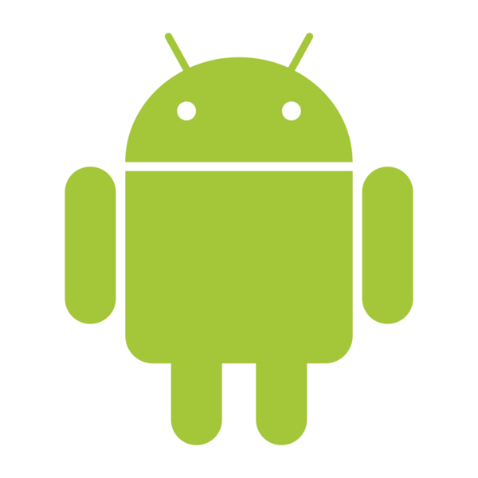

Android
O Android é um sistema operativo móvel baseado em Linux, desenvolvido principalmente pela Google. Atualmente é um dos sistemas mais utilizados em smartphones e tablets em todo o mundo.
Uma das grandes vantagens do Android é a sua flexibilidade. Diversos fabricantes utilizam o sistema, criando uma enorme variedade de dispositivos para diferentes necessidades e orçamentos.
A loja oficial de aplicações é a Google Play Store, onde os utilizadores podem encontrar milhões de apps, jogos, livros e filmes.
